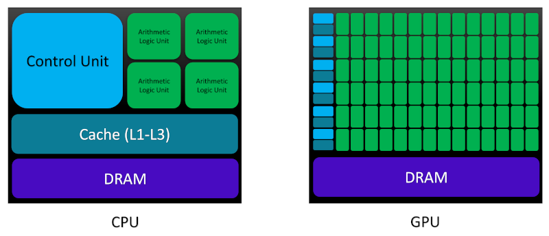

Introduction#
Overview
Questions:
What is heterogeneous parallel programming? Where did it come from and how did it evolve?
What are the main differences between CPU and GPU architectures and their relation to parallel programming paradigms?
What is CUDA? Why do I need to know about it?
Objectives:
Understanding the fundamentals of heterogeneous parallel programming
Learning the basic aspects of GPU architectures and software models for heterogeneous parallel programming
An initial overview of CUDA as a programming platform and model
1. Background#
High-performance computing (HPC) is a highly multi-disciplinary area of research at the intersection of computing systems, hardware architectures, software platforms and parallel programming paradigms. The main goal of HPC is to deliver high-troughput and efficient solutions to computationally expensive problems via simultaneous use of multiple computational processing units. The invention of graphics processing units (GPUs) more than two decades ago by NVIDIA was followed by significant improvements in both GPU architecture and software design. During this period, NVIDIA has introduced a new GPU architecture in roughly every 2 years: Tesla (2007), Fermi (2009), Kepler (2012), Maxwell (2014), Pascal (2016), Volta (2017), Turing (2018), and Ampere (2020). The aforementioned GPU architectures are often a part of the following production line families:
Tegra: designed for mobile and embedded devices such as smart phones and tablets
Geforce and Titan: built for consumer-oriented graphics and entertainment tasks
Quadro: created for professional visualization
Tesla: optimized for technical and scientific computing
Jetson: suitable for artificial intelligence (AI)-driven autonomous machines
As detailed in the Software/Hardware Specifications section, we will use two CUDA-enabled GPU devices from the GeForce family with Kepler and Turing micro-architectures throughout this tutorial.
2. Parallel Programming Paradigms#
A programmer might see a program as a construct comprised of data and instructions. In the absence of data dependency between a set of instructions, e.g., where the resulting data generated by an instruction from the first task is not required for performing another instruction in a second task, the sequential (serial) code can run as a parallel program and perform the aforementioned (data-)independent tasks, concurrently. Therefore, two fundamental types of parallelism can be realized for each program: (i) task parallelism, and (ii) data parallelism. Task parallelism is based on distribution of independent instructions on multiple processing units mainly because some functionalities and instructions in the code might be able to operate independently. Meanwhile, data parallelism delocalizes the data across a group of processing units because multiple processors can concurrently operate on the data corresponding to each task.
In order to write a parallel code, homogeneous parallel programming is often adopted, in which one or multiple processing units of the same architecture type perform the tasks concurrently. However, the heterogeneous parallel programming offers a rigorous alternative where processing units from multiple architecture types are responsible for performing parallelization. Here, GPUs perform the data-intensive tasks and central processing units (CPUs) perform the instruction-intensive operations in order to improve the overall performance compared with both sequential and homogeneous parallel programming models.
To better understand the concept of heterogeneous parallel programming, we should introduce the following concepts:
Latency: The duration of an operation from its beginning to its completion expressed in microseconds (ms)
Throughput: The number of operations processed per unit of time expressed in gigaflops (Gflops), which translates into a billion floating-point operations per second.
Bandwidth: The processed amount of data per unit of time expressed in megabytes per second (MB/s) or gigabytes per second (GB/s)
Now, let us compare the main architectural differences between CPUs and GPUs in order to be able to see the motivation behind heterogeneous parallel computing in terms of the concepts we just learned, more clearly:

The main memory space in both CPU and GPU architectures is assembled using dynamic random access memory (DRAM). However, lower-latency memory units such as cache have been constructed using static random access memory (SRAM). CPU cores are armed with a large amount of cache space at different levels (L1-L3 and rarely, L4), which allows them to reduce the latency in memory access through benefiting from the principle of locality and speculative execution. By storing the frequently used data in cache and predicting the next instruction through an out-of-order execution, CPUs attempt to minimize the latency of data access/storage from the memory, in particular at high-clock speed. From L1 to L3, both memory capacity (or its size) and the data access latency increase. L1 cache is built on the CPU chip physically closer to the processing units than L2 and L3 cache which are built onto the motherboard or CPU module. Based on the aforementioned architectural details, CPUs are best suited for complex logical codes with instruction-intensive dynamical workload and short sequences of computational operations.
Armed with thousands of transistors on chip, GPUs are designed to hide the latency through maximizing throughput by handling large number of concurrently active threads: when one thread is waiting for fetching the data from memory, other active threads can start the execution at the same time. NVIDIA calls this type of architecture single instruction multiple thread (SIMT) which highlights its optimization for data-intensive computational tasks with simple logical control flow. A PCI-Express bus connects the CPUs and GPUs.
At this point, we have learned some details about GPU hardware architectures and gained some insights into the motivation behind the heterogeneous parallel programming. Let us focus on the software aspect and see how we can improve the performance of our codes by harnessing the power of CPUs and GPUs at the same time.
3. CUDA: A Platform for Heterogeneous Parallel Programming#
Since its first release in 2007, compute unified device architecture (CUDA) has become the major standard platform for the general-purpose computation using GPU (GPGPU), a term coined by Mark Harris highlighting the non-graphical computational applications performed using GPUs.
CUDA as a heterogeneous parallel programming platform provides the programmer with access to the programmable GPU threads through compiler directives, application programming interfaces (APIs), standard programming language extensions such as C, C++, Python, Fortran etc., and CUDA-accelerated libraries. As a programming model, CUDA exposes both thread and memory hierarchies which enables user to have a great amount of control over GPU threads and memories. We will discuss these concepts in more details in the next few lessons.
CUDA development environment also provides some tools for creating GPU-accelerated programs, including: GPU management tools, NVIDIA Nsight integrated development environment (IDE), CUDA-GDB for debugging via command line interface, visual and command-line variants of profiling tools for performance analysis, and CUDA-MEMCHECK for memory analysis.
Key Points
Heterogeneous parallel programming
Basic aspects of GPU architecture
CUDA as a platform and programming model